网络设置
点击主页的设置，进入设置界面，最新开始的是网络设置，wifi的设置，可以点击wifi的按钮打开wifi连接网络
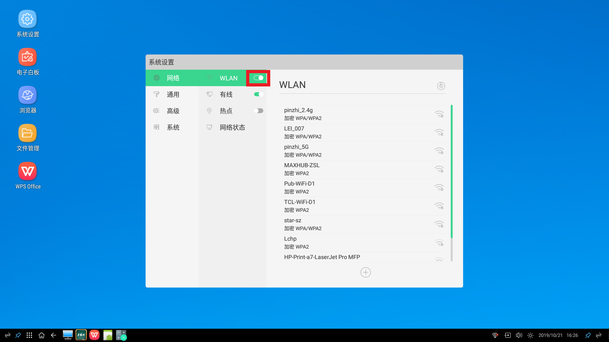有线网络
点击有线，打开有线网络的按钮，可以看到当前连接的有线网络的相关信息
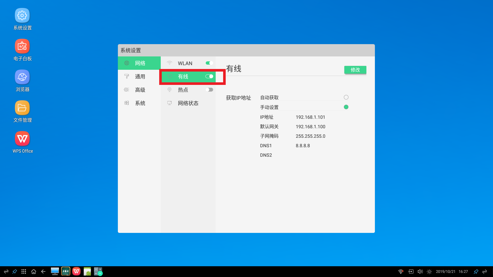网络状态
点击网络状态，可以查看当前的网络连接状态，以及相关的信息
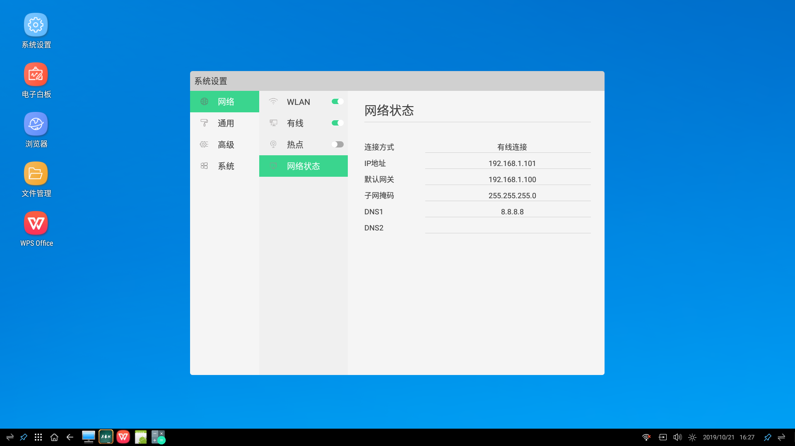对系统精灵的设置
点击通用设置，选择系统精灵，可以选择对悬浮球的操作
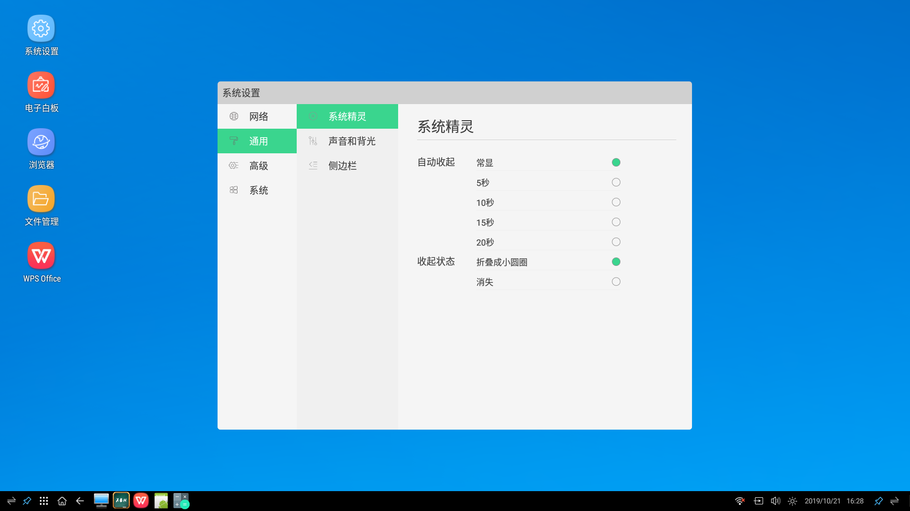声音和背光的设置
点击通用设置，选择声音和背光，可以对声音大小和声音模式进行设定，以及对图像亮度和图像模式的设置
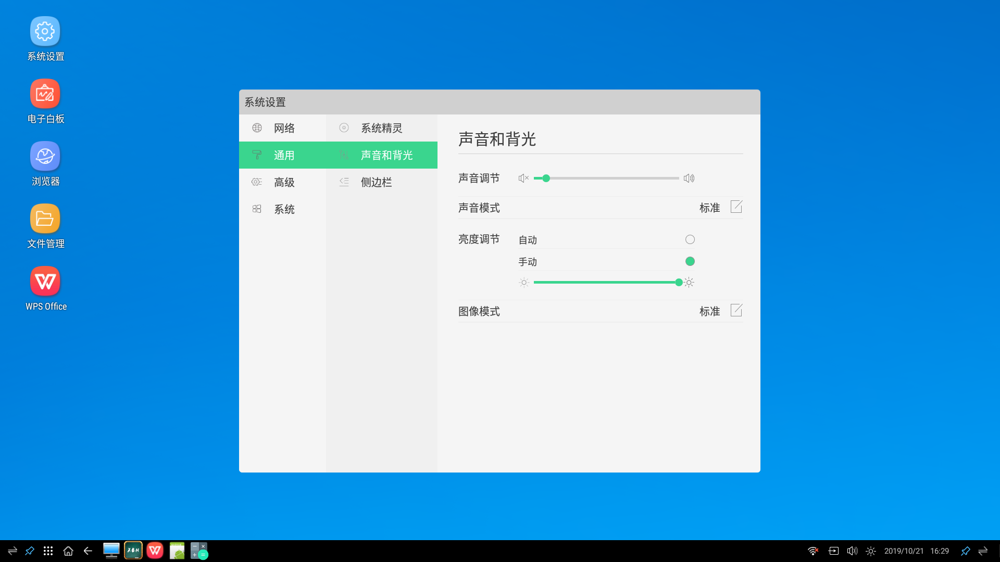侧边栏的设定
点击通用设置，选择侧边栏，打开开关则显示如图

点击主页旁边的侧边栏，弹出侧边栏
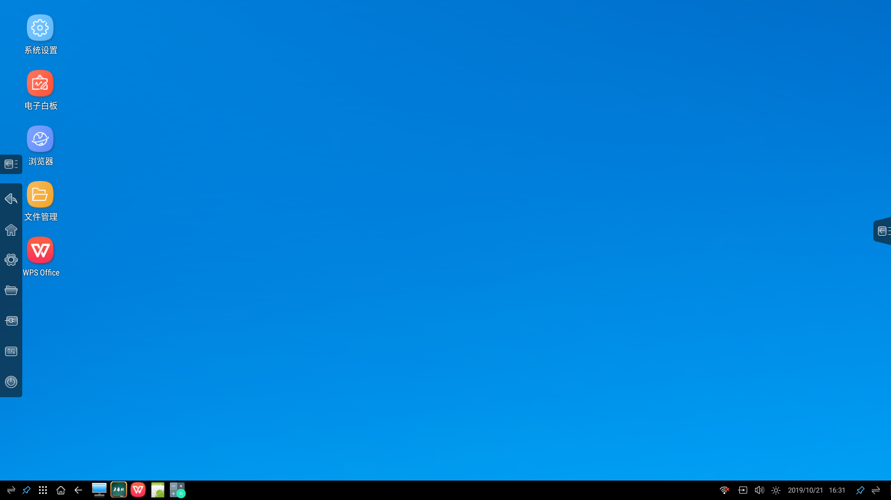点击设置中的侧边栏，关闭侧边栏，则主页侧边栏消失

打印机
点击高级，选择打印机，可以看到关于安装打印机的相应介绍
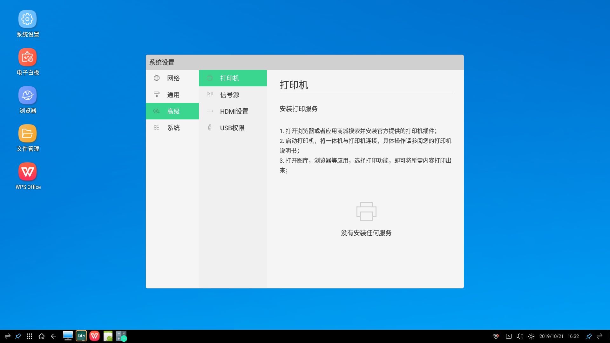信号源
点击高级，选择信号源，可以看到信号源的信息，可以对信号源进行选择和设置
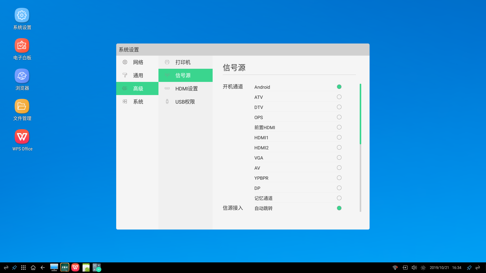HDMI设置
点击高级，选择HDMI设置，可以选择开启或者关闭HDCP
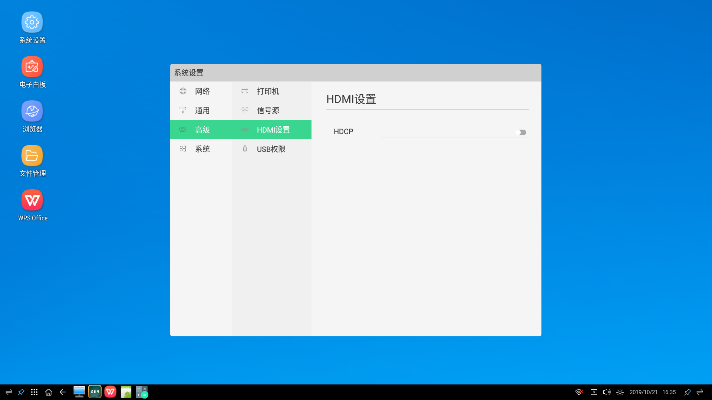USB权限设置
点击高级，选择USB权限，可以选择开启或者关闭USB权限
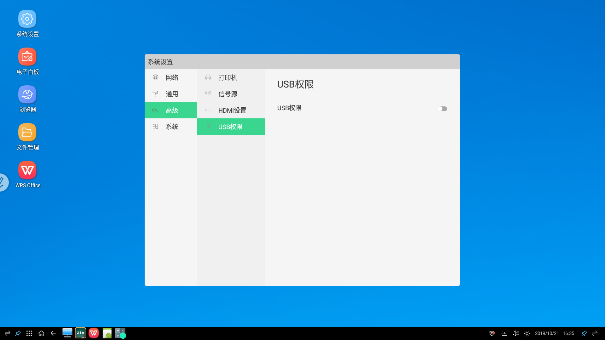日期和时间
点击系统，选择日期和时间，可以对日期和时间进行设定
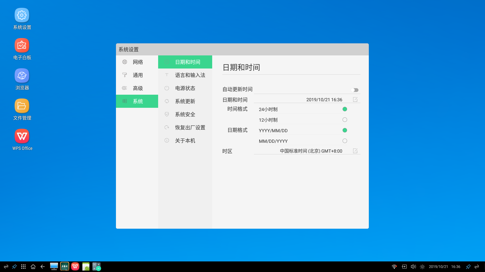语言和输入法
点击设置，选择系统，再选择语言和输入法，可以对语言和输入法进行设定
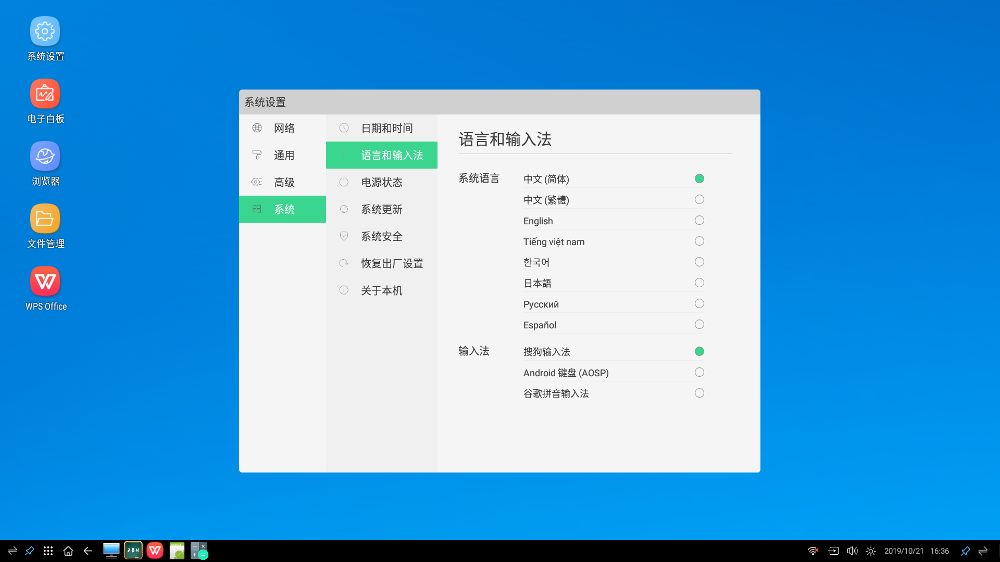电源状态
点击设置，选择系统，再选择电源状态，可以对开机选项、系统休眠、待机、温度检测和定时开关机等进行设定
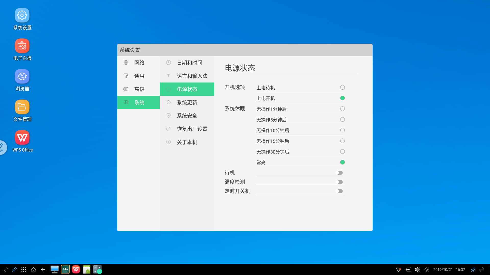系统更新
点击设置，选择系统，再选择系统更新，可以对系统进行检查更新
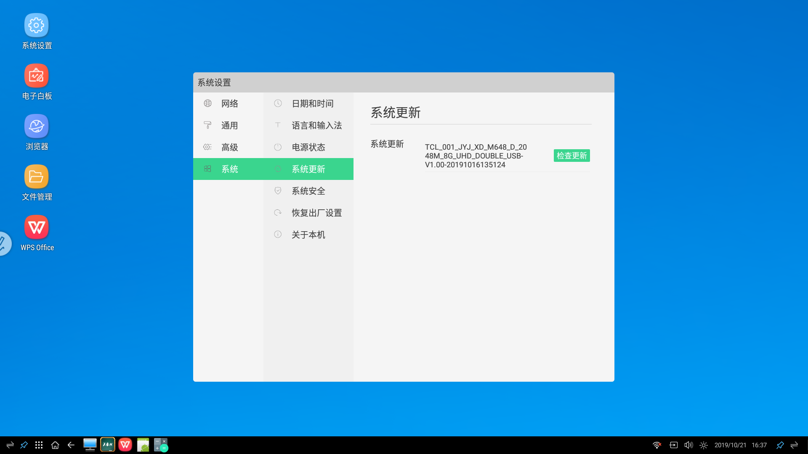系统安全
点击设置，选择系统，再选择系统安全，可以选择开启和关闭锁屏和U盘锁屏
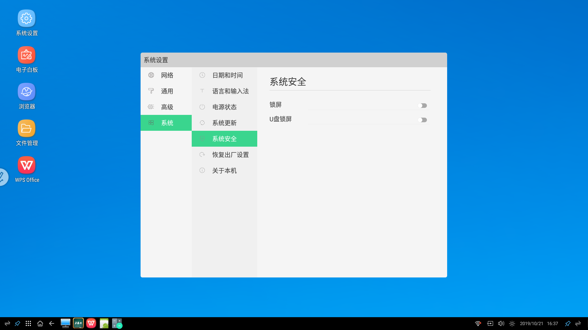恢复出厂设置
点击设置，选择系统，再选择恢复出厂设置，可以对本机进行重置
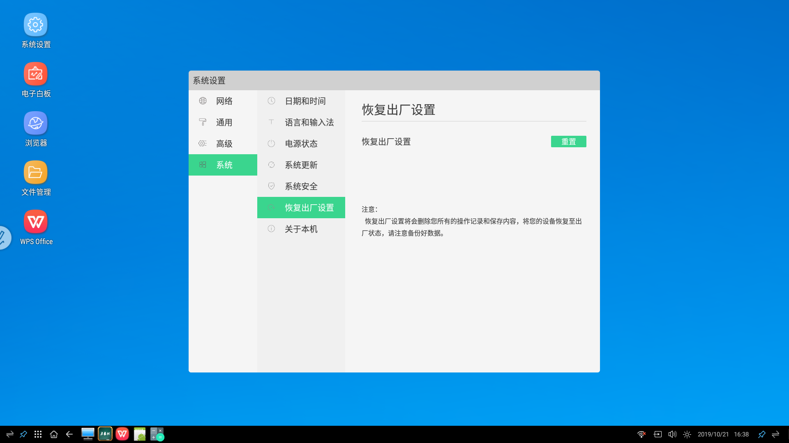关于本机
点击设置，选择系统，再选择关于本机，可以看到本机的信息
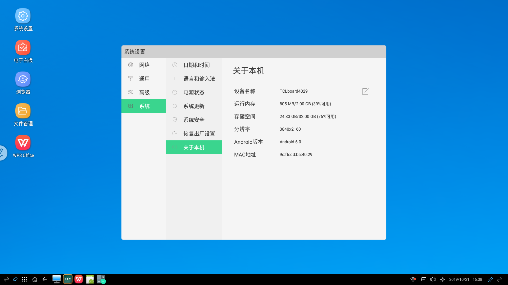